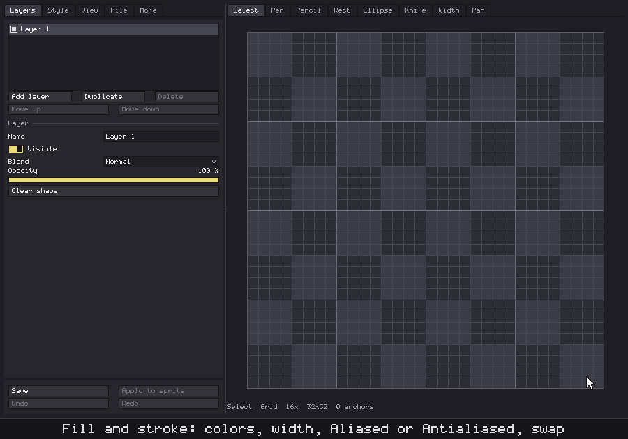
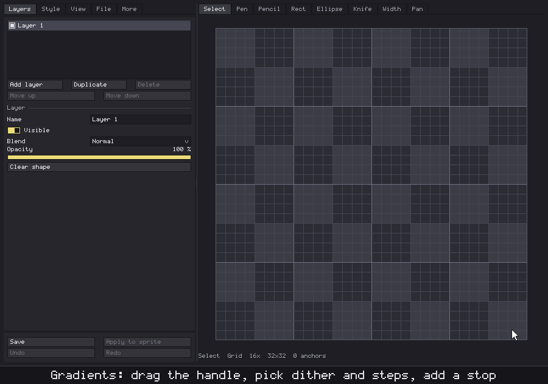
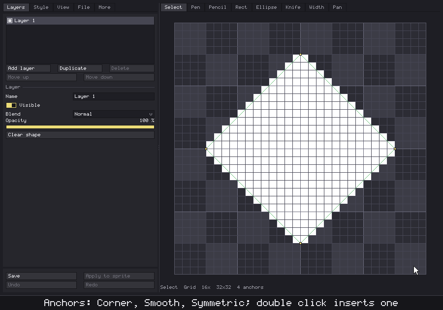

VeSprite 0.2 is out. Nothing new to draw with this time. The tools, the rasterizer and the SVG code are the ones from 0.1. What changed is everything you click on to reach them, because the old window was the part I liked least.
Short version for anyone new: you draw with bezier tools inside Aseprite and get pixels back, on the grid, aliased, with one-pixel outlines walked the way you would walk them by hand.
Why a new window
In 0.1 I drew the panel by hand, and you could tell. Blend, snap, dither and edge were buttons that jumped to the next value on every click, so getting from Normal to Add was four clicks and a bit of faith. Opacity moved in steps of ten. Colour, layer name and canvas size each opened a little window of their own. And the shortcuts were written on the buttons, which is why the window had to open so wide.
The new one is the window Bonebase already had, with VeSprite inside it.
Tabs and panel
Everything that was spread around the canvas now sits in five tabs on the left: Layers, Style, View, File and More. The sections inside a tab fold, so you can put away the half you're not using.
- Save, Apply to sprite, Undo and Redo stay under the panel on every tab.
- The divider between the panel and the canvas drags. It remembers where you left it, and so does the open tab.
- The tools are a bar over the canvas, and the status line under it still says what a drag is about to do.
Lists and sliders

Anything that used to cycle is a list now: click it, pick the value, done. Width, opacity, steps and stop position are sliders, and if you want an exact number you click the number and type it.
Undo follows the same rule as on the canvas: one drag of a slider, or of the colour picker, is one step.
Colour picker
The colour box opens a picker inside the window, with RGBA sliders, a hex field and the palette of the sprite you have open as swatches. Use foreground and Use background still take Aseprite's current colours when that's quicker.
Layers
The layer list has an eye on every row, so hiding a layer that isn't the active one is a single click. Double click a row and you rename it right there. Blend and opacity live under the list.
Gradients

The ramp is in the Style tab. Click it to add a stop, drag a stop to move it, double click it to change its colour. Shape, Colors, Steps and Dither sit right under it.
One thing it doesn't do: the ramp in the panel shows the bands and the colours, but not the dither pattern. That one you only see on the canvas.
Snap and anchor type

Both were buttons on the old bar, and both are lists on the View tab now, next to the pixel grid and Close shapes (the old Auto close). The keys still work: S for the next snap mode, C for corner or smooth.
Keys and mouse
?or F1 opens the shortcut list. That's where the shortcuts went when they left the buttons.- 0 or F fits the canvas. 1, 2 and 3 zoom to 100, 200 and 300 %.
- The middle button pans from any tool. Space and the Pan tool do too.
- Right click still removes the anchor under the cursor, so it doesn't pan here like it does in Bonebase. If your hand expects it, sorry. The anchors got there first.
Fixes and smaller changes
- Messages and errors go to the status line, in a warning colour when something went wrong. No more boxes to dismiss.
- The only Aseprite windows left are the file dialogs and the question before New throws your drawing away.
- Canvas size is two number fields on the View tab, and Size from sprite copies the open sprite's.
- A More tab lists my other extensions. It's a tab and nothing else: no popups.
- Your
.vespritefiles from 0.1 open as they are. - Every GIF on the page is recorded again from the new window.
This version was about the window, so if something took one click before and takes two now, I want to know. Same if there's a tool you keep reaching for and it isn't there. Tell me in the comments.